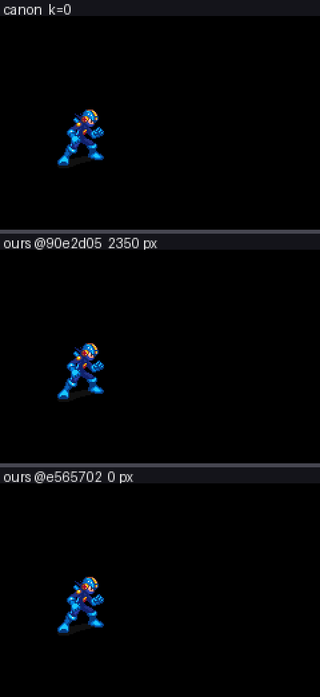
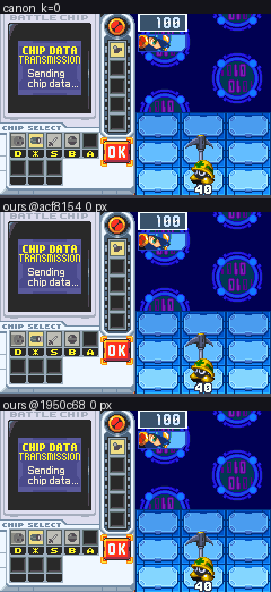
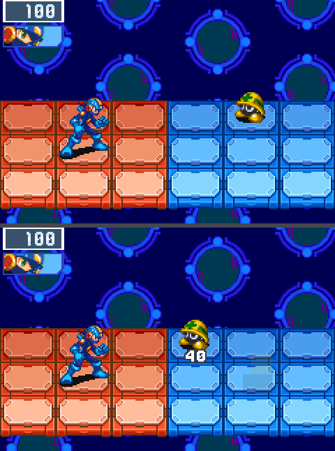
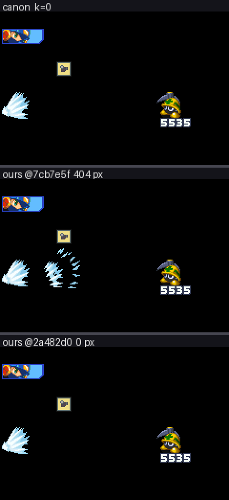
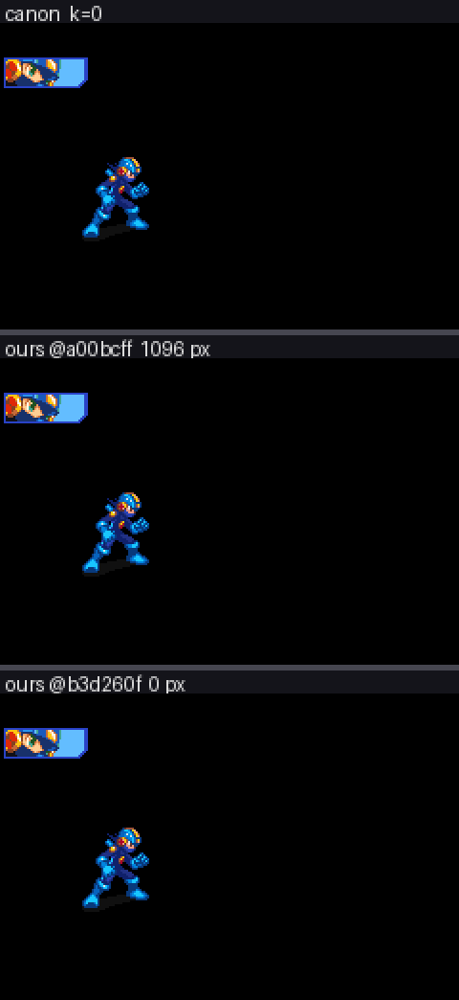
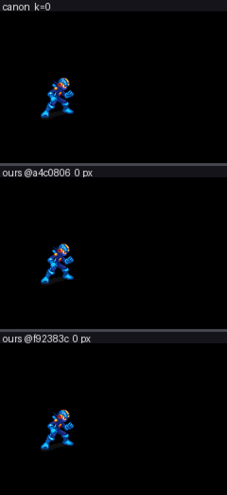
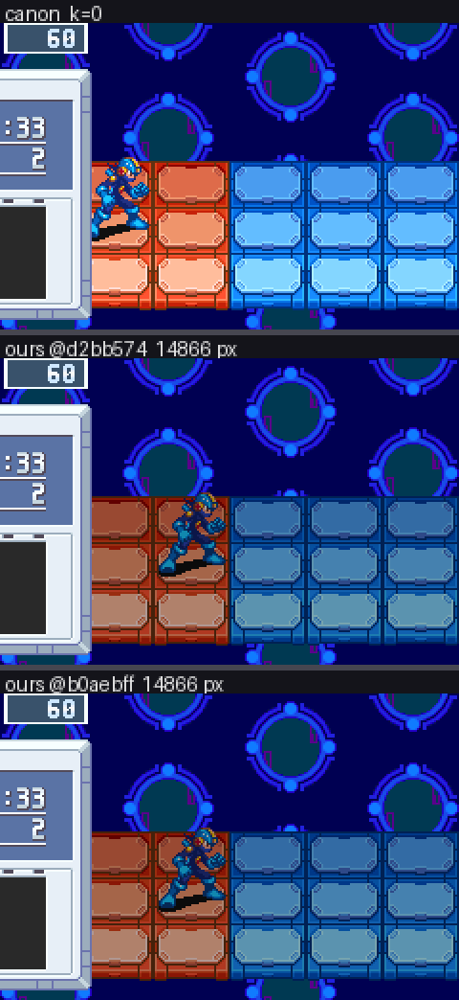
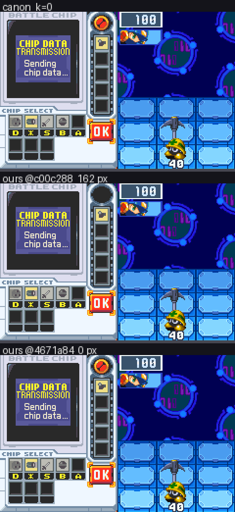
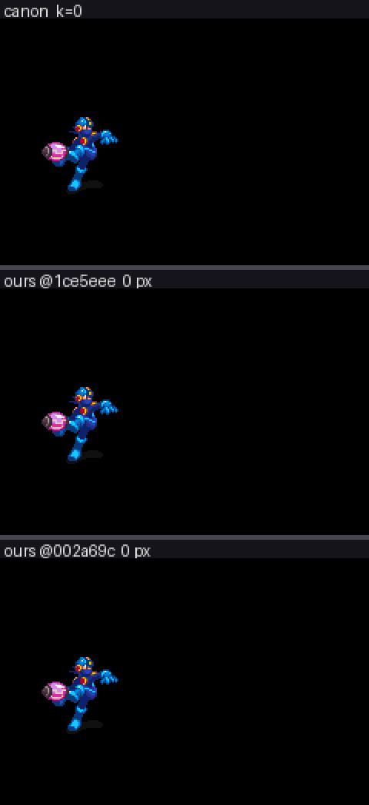
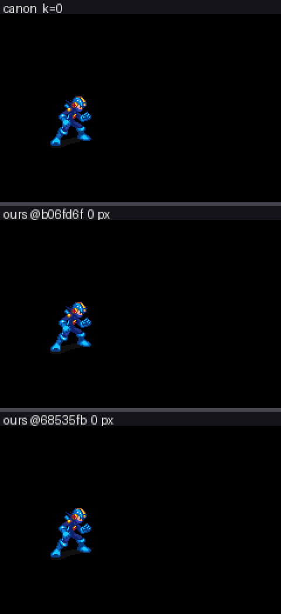

This project rebuilds the battle engine of Mega Man Battle Network 6, a Game Boy Advance game, as new code in Rust. The rule is exact: a scene played by our version must match a recording of the original game pixel for pixel, frame by frame. Small AI agents do the work in tickets, each a bounded task; a ticket ends finished, half-done, blocked, or as a dead end that taught us something.
In the last 24 hours the agents closed 54 tickets: 10 finished, 19 half-done and kept, 25 blocked or dead ends. Every number below was measured by the automatic comparison against a recording of the original game.
The opening seconds of a fight
A fight opens with the viruses materialising onto the arena, each on the square its formation gives it, each handed a palette slot that fixes its colours. Compared alone, without the surrounding interface, the opening matches; inside a full fight those same 40 frames showed a reported 72499 differing pixels. Two produced only measurements of how the intro assigns palettes and sheets (F38c, F38d). A third found the defect and was blocked from fixing it: we spawn the viruses down a diagonal, where the original's own data gives squares (5,1), (5,3) and (6,2), so the third virus's 24-pixel error is one row of squares, not the animation bug assumed (F38e). Porting those bytes grew our scene descriptor from 64 bytes to 67, a hand-recorded state file for the chip menu stopped fitting, that menu went from one differing pixel to 26, and it was reverted (F38f). The file is hand-captured and cannot be regenerated (F38g), so the squares were re-encoded inside the old size, reporting 25829 (F38h). The last ticket, meant to hand palette slots out in the original's order, found its premise gone: the opening inside a full fight already matches every pixel of every frame, 25829 does not reproduce, and its stub was dropped (F38i).
The chip-selection cursor
Between turns the fight pauses and the player picks chips from a menu with a moving cursor; our 170-frame recording sits at one differing pixel, a "tear" that wanders and is tolerated for now. Four attempts failed: a re-measurement after the window's marker changed found nothing moved (F37h); two ran out before porting (F37i, F37k); two ports of the original's queued-transfer drain both made the cursor worse (F37j). The fifth described it at last — 1 pixel at (183,5) on frame 97 alone, not the 3 pixels on two frames earlier tickets were told of, frame 37 having been cleaned up by the opening work — and named the cause: the original's queue lands tiles mid-frame, part-way down the screen, while we write all 36 tiles before the frame starts (F37l).
The phases of a fight
A fight steps through phases — chip window, countdown, fight, banner, results — which the original drives with a numbered state and handler table; both sides' state is recorded frame by frame and compared. The first pass landed those states without moving a pixel, but its evidence did not reproduce; a re-check kept three disagreements: the enemy on frame 0, MegaMan on frame 179, the generator on frame 271 (T7). Porting the window's states from the original's dispatch table fixed the results recording but left 173 of 540 frames of a full fight disagreeing (T7c); a scenario built to close the window showed the original holding a window state far longer (T7d); neither merged. A later ticket brought all 540 frames into agreement, naming the window-opening and kill-timing groups (T7e); merging the old branch afterwards proved pointless, the fault having been the scenario's setup (T7g).
The countdown is still held by a fitted number: we wait 60 frames because 60 was measured, not because the original says so. One confirmed the window's edges without removing the 60 (T7f); one modelled the real leave condition in comments (T7j); one ported it and lost to the banner's 30-frame countdown, which expires before the banner exists, cutting disagreement only from 273 to 256 of 540 and costing 38 pixels in the chip menu (T7u). MegaMan's per-frame work was gated off while the window is up (T7q), his release-edge block moved after his update as the original's order requires (T7o). Seeding the fight with a full custom gauge and a scripted press made the machine walk the window states, improving MegaMan's frame-179 group from 101 differing action values to 76 (T7r), but opened the window on our frame 125 against the original's 42 — an 83-frame drift with no legal repair, the gauge pause being a hardcoded 60 (T7s).
The generator is compared as a cadence — how often each side draws per frame — since one extra draw desynchronises everything after. Its first divergence was named at frame 271, on 10 of 540 frames (T7n); a call-order move took it to 9, under the bar, leaving the follow-up nothing to do (T7p); the last found it back at 14 after the scripted stalls added frames, the cited debris spawner covering 2 (T7v). Three never reached a port (T7i, T7m, and T7l, which meant to seed the original's hop pose on frame 0 so the spawn fade stops parking the enemy's action at zero); one idea was rejected outright, the original's Mettaur starting in spawn action 0x0A where ours sits at 0x00, which changed nothing (T7h).
The Gunner virus
The Mettaur, the hard-hat virus that sends a shockwave down a row, was the only enemy our engine could field; the Gunner aims a cursor at MegaMan and fires. Fielding one was the whole problem: the recorded battle always yields three Mettaurs, the formation rolled on frame 60, and our scene descriptor could not say a slot holds something else (T9). The lever proved to be the frame counter: poked once on frame 60, the roll picks a Mettaur-plus-Gunner formation (T9b), and that recipe landed with two bits per slot naming each slot's virus (T9c). The poked fight then refused to go live — nothing writes the phase word on either route in, and the phase moves only from a hand-played paused save (T9d). Two follow-ups poked the blocking values directly, moved the phase machine and still got no live fight (T9e, T9f); a third returned three negatives from the attack's settle window (T9g). Its behaviour was ported from the table the original indexes by enemy type (T9h), then as its real routine — a four-arm machine that aims a cursor, locks it, fires 3 shots 10 frames apart and recovers for 24 — taking the recording from 3859001 differing pixels to 2850534 over 130 frames (T9j). Moving the cursor and impact bookkeeping into the Gunner's own data proved relocation only, and the widened signature broke the Mettaur path, pushing the chip menu to 59 pixels (T9k).
The results screen, and what a full fight puts behind it
The results screen, the window that slides in with the rank and the reward, carried a tracked residue of 102547 pixels over 40 frames; the ticket sent to decompose it found the screen already matching exactly — trustworthy because a deliberately wrong build run alongside still differs, by 111839 pixels (F21e). Two residues exist only inside a full fight: firing the buster matches exactly on its own, but inside a fight it was tracked near 643698 pixels, measured at 54672, and split into 8862 in the chip-name strip and 45810 in the sliding results window (F35a). Warping between panels was tracked at 363658 and measured at 40628, all of it a six-frame ramp where the original's chip-name slide writes its tiles a frame earlier than ours (F36a); a second decomposition put 40302 of those pixels in the scrolling backdrop, so the two readings disagree about which layer owns it (F36b).
Sound
Audio is compared like pixels: both sides' mixed output dumped and compared sample for sample. The first ran 200 frames: 642914 samples on the original against 640170 on ours, 99.9884% of compared samples differing, because the two sides play different battle music (T13). Two defects were fixed: our hit sample fired whether or not the shot connected and is now armed only when damage lands, along with a 6.6 ms onset offset (T13b). A second scenario hit a wrong premise: the plan was to gate chip-fire and chip-damage sounds behind the original's conditions, but our code plays neither and the cited routines contain no sound call (T13c). The follow-up dumped the cannon route channel by channel — the original plays a chip-select blip and the chip-fire effect, ours nothing at all (T13d).
The ROM's own tables, and the two script interpreters
"Done" is counted per item, so the counts came from the ROM's own tables rather than anyone's notes: 411 chips, 63 Program Advances, 32 virus families across 187 ranks, 25 Navis (T10). The enemy roster got its own pass, 452 identity rows read from the type tables: the think side holds 32 entries, not the predicted 96, and its entries are not routines but pointers to per-action handler tables — the shape the Gunner port needed (T12). The game's two small interpreters, for map cutscene scripts and for the chatbox text framing a battle, were ported as jump tables of 71 and 27 opcodes, every unimplemented one a named trap carrying the original's symbol; the chip menu improved from 44 differing pixels to 7 (T8).
The tooling
Two tickets went to the measuring apparatus. The phase comparison had been reading recordings made before the phase field existed, agreeing on a field that was absent, and its alignment option crashed; fresh recordings and a fixed comparator gave honest numbers — the Mettaur and popup recordings agree across all 70 and 80 frames, a full fight disagreed on 174 of 540 (T7b). Separately, a race in the capture step could grab the Gunner recording's frames at the wrong moment; fixed, that row now reports what it sees (T9i).
New recordings



Where the whole thing stands
The game is compared against the original in 67 recorded scenes. 60 of them now match pixel for pixel in every frame. The scenes that still differ: opening (inside a full fight); field (inside a full fight); warp (inside a full fight); chip-use (inside a full fight); gunner (on its own); gunner (inside a full fight); cursor (on its own). Each is a known, measured gap with a ticket behind it.
What it cost
The agents run on prepaid subscriptions. Charm Hyper: 246.3 of 250 credits (3.7 used today, 1%). tickets 45, landed 25, pi spend $23.54, $/landed 0.942, NEGATIVE+BLOCKED 16 (36%).
Two subscriptions, one map
2026-09-14
The agents no longer belong to one subscription. A single configuration file now says which model does which job on which service, and the launcher, the watchers and the one-off tools all read it. Swapping a service means adding a block to that file; running two at once means listing both.
What a run is made of
A run has four jobs: a coordinator that reads the ticket list, hands out work, checks the numbers and merges; workers that change the code in their own copies of the repository and measure the result against the recording of the original game; a verifier that checks a claim the numbers alone cannot prove; and a recon agent that maps where a behaviour lives in the original's disassembly. Each job names a list of candidate models in order of preference, from any service, and a run takes the first candidate whose service has budget at launch. If the service behind a job runs dry during the day, the run stops and comes back on the next candidate.
The second subscription
The MiniMax coding plan was put through the same test the others took: seven archived tickets, each replayed from the commit it started from, judged by rebuilding the result from a clean checkout and re-measuring every pixel. Its M3 model passed three of four at the same pace as the Hyper worker (about fourteen minutes a pass) and failed one after a long attempt. As a coordinator it ran a full cycle on the third try: picked a ticket, dispatched it, verified the branch, had its own verifier confirm four claims, merged, and wrote the follow-ups. The first try ended on a judgment call and the second was killed by a bug in another run's watcher, since fixed.
Two things about the plan shape the schedule. It refuses bursts long before its quota is used, so requests now pass through a small local pacer that spaces them and retries quietly. And its weekly window is the real budget: a ticket cycle costs about 0.7% of the week, so each day may spend the weekly remainder divided by the days left, and the run stops for the day when that is gone.
The decision
Both services now run at the same time, each with its own coordinator, and they share the ticket queue by claiming tickets. Hyper's day is its 250 credits, spent to the last few (248.8 of 250 today); MiniMax's day is its share of the week. The idea of one service's coordinator driving the other's workers stays written down but unused: M3 coordinates well enough on its own, and a fourth concurrent session on Hyper trips its hourly limit, which voided three benchmark replays this afternoon before the benchmarks learned to run alone.
Two of the three interpreters are in
2026-09-14
The port plan named three interpreters that sit under everything in the original game's battle code: the animation player, the object dispatcher, and the script VMs. The first two landed today, in four tickets, each verified by the full comparison table staying identical and by the state trace of a full scripted battle diverging no earlier than before.
The animation player, all four steps: binding a sprite's animation tables from the ROM data; the per-frame update with the original's countdown, consume, loop-or-hold semantics; the alternate stream and the way a caller switches an object to a new animation; and the update gate with its rebind protocol and its time-stop variants. Our hand-written player is gone behind the same interface.
The object dispatcher: the original keeps a table of live objects and, each frame, walks it and sends every object to the entry routine for its type; enemies go through a think step and an act step. That table and that walk are ported (objects.rs), with our actors, shots and effects as the per-type entries for now.
Why this order matters: the last phase spent most of its effort on lifecycle differences (an object updating a frame late, a pose held one frame short) that were symptoms of not having these two pieces. From here, an enemy or a chip is the original's routine running under the original's dispatcher and player, not a re-creation of what it looks like.
Next: the Mettaur becomes the original's per-type routine instead of our state machine, then the battle's end sequence becomes the original's state table, which is what the five whole-screen comparisons have been waiting for.
The third interpreter: the script VMs
2026-09-14
The last of the three interpreters from the port plan landed: the original game's script VMs. There are two of them, a map-script VM that drives cutscenes and encounters (a jump table of 71 opcodes in the original, bound by the same mov r4, #70 check the disassembly shows) and a chatbox text-script VM (27 opcodes, indexed from byte 0xE5), each with its state block at the address the original uses. Only the opcodes a full scripted battle and the results screen actually execute are implemented; every other opcode is a named trap carrying the original's symbol, so the first time a scenario reaches one the trace names it rather than guessing.
The comparison table did not move: every isolated row still 0, the cursor's single-frame tear shrank to 7 pixels with the ROM's new layout, and the rollup passes. This landing cost $0.25 of the Hyper subscription's credits; it was the first ticket landed entirely by the new all-Hyper loop, coordinator included.
With the animation player, the object dispatcher and the script VMs in place, the Mettaur already running as the original's routine, and a trace that names the first divergent field, the remaining work is content and coverage: the second virus (the Gunner, whose blockers were measured today), the battle's end sequence as the original's state table, and then the routines the coverage tables rank, in order.
The Mettaur runs on the original's routine
2026-09-14
The first piece of content to become the original game's code rather than our re-creation of it: the Mettaur. Its brain in our build was a hand-written state machine (wait, line up with MegaMan, hop, swing, launch the shockwave) tuned over several tickets to match the original's counts frame by frame. Today that state machine is gone. The Mettaur is now the original's own per-type routine, ported from the disassembly and run by the object dispatcher landed yesterday, reading its timers from the same fields the original reads.
The comparison table did not move: every isolated row still reads 0, the Mettaur's own row included, and the state trace of a full scripted battle shows the enemy's state and action matching the original on all 70 frames of the Mettaur scenario. The landing cost nine cents on the cheap tier.
Why it matters more than the row: the Mettaur was the one enemy we had, and every one of its behaviours had been a separate investigation. The next virus does not get that treatment. It gets its routine ported the same way, under the same dispatcher and the same animation player, and the trace says whether it is right. That is the shape the rest of the content takes: five viruses and two bosses in scope, each a port, not a project.
Next: the battle's end sequence as the original's state table, which is what the five whole-screen comparisons have been waiting on.
The mechanisms behind the last residues
2026-09-14
For most of the project's life the largest remaining differences from the real ROM were single rows with tens or hundreds of thousands of differing pixels: the results screen, the chip window closing, the custom screen, the Mettaur. Over the last day they were taken apart layer by layer and object by object, and each turned out to be a small mechanism rather than an art or timing constant.
Objects update on the frame they spawn. Canon's object dispatcher loads a sprite and updates it in the same frame; ours skipped the first update on hop-spawned shockwave segments and on shot objects, so every animation change on them ran a frame late. One statement each. The Mettaur row went from 4265 to 0.

The HUD is a mask of elements. Canon enables and draws HUD elements through a per-element mask and tears five of them down together on the frame the RESULT countdown starts; we hid the emotion window the moment the last enemy died. Popup went from 60614 to 0.

The emotion window moves with the chip window. Its draw routine adds the chip window's slide counter to both objects' x, so it sits 120 pixels to the right while the custom screen is open. Cursor lost exactly the predicted 117980 pixels.
The backdrop's phase is derivable. Canon's scroll counters count down 8 and 4 per frame from battle init, so every fixture's backdrop seed can be derived from canon's RAM at the row's reference frame, once our engine's two pipeline lags were measured on one row and predicted on the next. Cursor's alignment had been sitting eleven frames off its event because of that missing seed.
The field pans from inside the window's slide routine. One and a half pixels per slide call, rounding down; ours panned ten frames late with the opposite rounding. The window-close row's field layer went to 0 on every frame.
Two frames in the Mettaur's wait arithmetic (canon's counter exits on negative, and arming takes its own frame) and the first attack that only looked 64 frames late: a scene difference, refuted with a measurement.
Three rows measured nothing. The buster and chip-use rows had canon standing idle because a scripted press could not reach its sequencer in a zero-enemy arena; the result was a vacuous alignment, an eight-wide tie rather than an event. Both were re-cut so canon fires, and both read 0 now.

Cursor sits at 8 pixels on two frames (a tile copy that canon drains mid-frame and we land before the first scanline); window-close is on its last ticket; the results screen reads 0.

The last row: the chip window closes to zero
2026-09-14
The comparison that held out longest is done. The chip window closing, 40 frames of a window sliding off the screen while the battle behind it resumes, started the phase at 695,603 differing pixels and reads 0 on every frame now, verified from a clean checkout against the real game. With it, every isolated comparison in the table reads 0 except the custom screen's cursor, which differs by 3 pixels on one frame: a tile copy the real game drains part-way down the frame while ours lands before the first scanline.

What the last 4,943 pixels were
Each step this morning removed one object's worth, measured object by object against the real game's sprite table:
The actors under the camera. The field pans while the chip window is open; our field moved but MegaMan and the Mettaur stayed. Making the objects read the camera the way the real game's draw does took the row from 34,902 to 130,221 pixels on the cursor comparison's scale and 12,538 to 19,168 here... then in the right direction once the camera itself rounded like the real game's (asr, not division).
The Mettaur's held pose. Under the custom-screen pause the real game freezes the Mettaur mid-attack, pickaxe raised, as a separate object. Ours idled. The pose and the pickaxe object came from the real game's memory at the reference frame.
The window's own mark, drawn through the slide-out as the real game does.
A wrong turn worth recording
For an hour this morning the results screen appeared to have regressed by 58,457 pixels, and two bisects went looking for the landing that did it. None had. A free model being benchmarked for the free-tier study had run "copy my build over the real ROM, swap briefly" and never swapped back, so every comparison on the real ROM after 06:54 was against the wrong game. The inputs are restored from the backup, every measurement now refuses to run if the real ROM or the root save states differ from it, and untrusted models no longer get shell access to the shared inputs. The results screen reads 0 again.
What convergence means, and doesn't
The table is 61 comparisons built from a handful of test scenes: one virus, 43 chips, the flows those scenes exercise. Their reaching 0 says the mechanisms those scenes touch are the real game's. It says nothing about the viruses, chips and screens the table has never captured, which is why the method changes now: record the real game's state per frame over whole scripted battles, and port its interpreters so content becomes data. The first instruments of that phase (the state trace, the coverage tables, the interpreter port plan) landed today alongside the last row.
The goal is the whole engine: a ladder to 100%
2026-09-14
The project's target is now stated in full: replicate Battle Network 6's battle engine, all of it. Every chip with its codes, every virus and rank, every Navi and the Cybeasts, the Program Advances, MegaMan's Crosses and Beast forms, the emotion system, the field's panel types and their rules, the damage system with its elements, guards, counters and statuses, the battle flow from encounter to results with rank and rewards, and every arena's presentation. Two decisions are still open (audio, and netbattle, which needs link-cable emulation), and one fact bounds it: the Falzar ROM is the reference, so Gregar-only content would need the Gregar ROM as a second reference.
What "done" means is the same for every item, and it is the standard the last two days were built on: a recording of the original game running that item, the original's routines ported from the disassembly with citations, the state trace showing no divergence on that recording, and zero differing pixels on its frames. That makes completion a count rather than a feeling, and the first milestone is to get the count from the ROM's own tables instead of from wikis: chips, viruses, Navis, forms, panels, statuses, formations, backdrops, and the customizer programs that change battle.
The ladder after that, in order: the engine core at zero divergence on a full scripted battle (the custom-screen states are the current gap); the field and damage rules, one recorded scenario per rule; chips as data through the ported object routines, then every chip verified; every virus; every Navi; MegaMan's forms and the emotion system; presentation completeness; then the two decisions. The daily review prints the ladder, the judge writes tickets only against unmet rungs, and posts here will report rungs and counts as they move. Size, honestly: several hundred items and likely a few hundred tickets; at the current rate of about thirty landings a day, one to three months of continuous running.
The first port: the real game's animation player
2026-09-14
The porting phase has its first landing. Every sprite in the original game is driven by a small bytecode: an animation is a list of frames, each with a duration and a set of parts, and a player routine counts the duration down, consumes the next command, and loops or holds at the end. Our build had played the same extracted data with a player written by hand, and most of the last residues of the previous phase were places where that player's lifecycle differed from the original's.
Today the first two of the player's four steps were ported routine for routine from the disassembly, cited line by line: binding a sprite's animation and frame tables from the ROM data, and the per-frame update with the original's countdown, consume, loop-or-hold semantics. It replaced our code behind the same interface, so the rest of the game did not change, and the whole comparison table reads exactly as before: every row at 0 that was at 0, the trace of a full scripted battle diverging no earlier than it did.
The instruments that make this kind of landing checkable also went in this morning: the state trace (record the original's battle state per frame, replay ours, name the first field and frame that differ), the coverage tables (1,140 routines the original executes in a full battle, 318 of them never touched by any of our comparisons), and the port plan for the three interpreters that sit under everything: this animation player, the object dispatcher, and the script VMs. The remaining two steps of the player are next, then the dispatcher.
The battle's end as a state table, and what the trace says is still missing
2026-09-14
The original game runs its banners, its custom-screen pauses and its end of battle from one small state machine: a byte that names the current state, a jump table of handlers, and a count for each state. Our build had a hand-written sequence with a flag and a constant. Today the state table is ported (T7), and a second ticket (T7b) made the evidence for it reproducible after a verifier caught the first attempt reporting matches on a field the recording did not contain: the trace's judge now fails loudly when a field is missing, and fresh recordings of a full battle, the Mettaur, the popup and the results screen are kept with the repository.
What the trace says now, frame by frame, is the useful part. On the full scripted battle the state byte matches the original on 366 of 540 frames. The 174 that differ are named: 100 frames where the original sits in its chip-select and custom-screen states while ours stays in the fight state with the window open, and nine frames at the end where our side reaches the results countdown early. Aligned on that end edge, the two sides match on all 239 remaining frames to the end of the recording. So the next ticket is not a guess: port the custom-screen states from the same table, and find the nine frames.
That is the shape the porting phase is meant to have. Instead of a residue on a picture, a named state on a named frame, with the original's handler to read.
Sixteen free models, one archived ticket, no worker
2026-09-14
The replay benchmark re-runs an archived ticket from its base commit with a candidate model and checks whether it reaches the verified answer. Today every tool-capable free model on OpenRouter got the same ticket (F18d, a small window-close fix) with a five-minute wall clock each, one at a time because the free tier's 1,000 requests a day are shared across all of them.
Two produced a passing commit: thinkingmachines/inkling-small in one minute and nex-agi/nex-n2.5-mini in five. Re-run after the quota reset, inkling-small did nothing in 99 turns and failed a harder ticket (the shockwave-flight fix); the nex run hit the quota. One pass out of three attempts is a coin, not a worker.
Three returned nothing at all (Gemma 4 26B and dots-3 rejected the requests; Nemotron 3.5 Lightning answered four times).
Eleven worked without finishing: real tool calls and text, no commit in five minutes; the Ling family and Cohere's coding model ran 200 to 300 tiny turns, shaped by the 20-requests-a-minute throttle rather than by the task.
Nothing cached on most of them, which for a metered model would make a 100-turn ticket ten times more expensive; free, it just made them slow.
For comparison, the paid tier's default worker (Muse Spark contributor) passes the same ticket for $0.10 in 14 minutes with 92% cache hits, and GLM 5.3 Flash fails it at $0.19.
The tool that produced this table also caught its own blind spot along the way: a branch with no commits used to count as a pass when the rows it checks were unchanged; it now reports a no-op instead. Full table in docs/benchmarks/free-models-2026-09-14.md.
Phase change: from residue chasing to trace-driven porting
2026-09-14
The rule for the first phase was simple: every existing row at 0 differing frames before any new content. As of today that gate is met for every isolated row but one 8-pixel timing residue, and the whole-screen variants of five rows wait on one thing, the end sequence entering the results screen on canon's frame, which four passes showed has to be ported as one state machine rather than fitted per row.
So the method changes. Building a second virus the way the Mettaur was built would repeat the residue chasing that cost this phase its first two days. Instead:
A state-trace harness (T1): record canon's battle state per frame over whole scripted battles, replay ours on the same inputs, and name the first divergent field and frame automatically, with pixels as the gate on the same recording.
Coverage from the disassembly fork's profiler (T2): the routines canon actually executes per scenario, ranked, so the porting queue comes from what runs.
Interpreters before content: canon's animation bytecode player, object dispatcher and script VMs, each verified by trace. After that, chips, viruses and maps are data from the ROM, and the five viruses and two bosses in scope are the first test of it.
The workflow that got here
Tickets are written by judgment and worked by a cheap coordinator running two workers in separate worktrees; every branch is reproduced from a clean checkout before it merges, and a model verifier is used only for claims the script cannot check. Landed tickets have cost about $0.17 each on the cheap tier; a one-day burst of stronger agents on the hardest rows landed twelve tickets and found most of the mechanisms in the previous post. A daily review now records cost per landed ticket, the scoreboard and cache health, an auditor proposes changes to the setup when the failure pattern or the phase changes, and a replay benchmark re-runs archived tickets on candidate models before any role changes model (two free models were tried today; neither could hold a task).
Hyper in the loop: which models pass
2026-09-14
The project moved its day-to-day compute to Charm Hyper today: a flat subscription of 250 credits a day, to be used in full every day, with OpenRouter kept as a reserve that nothing touches by default. Before any role changed model, the replay benchmark re-ran two archived tickets from their base commits on Hyper's models: a small window-close fix (F18d) and a mechanism fix (the shockwave's one-frame hit delay, F25c). Pass means the model reproduced the verified landing, checked from a clean checkout.
| model | small fix | mechanism fix | |---|---|---| | GLM 5.3 Flash | pass, $0.33, 16 min | pass, $0.42, 13 min | | Qwen 3.8 Flash | pass, $0.42, 37 min | pass, $0.62, 53 min | | MiniMax M3 | pass, $1.34, 13 min | pass, $0.73, 6 min | | Kimi K2.5 | pass, $1.36, 16 min | fail, $1.66 | | DeepSeek 4.1 Flash | no commit, $0.69 | not run |
GLM 5.3 Flash takes the worker role: cheapest passer on both, fast, with cache hits above 90% through Hyper's gateway. The verifier moves to Qwen so it is not checking its own family's work; the coordinator runs on Qwen too. On the free tier the same models had looked hopeless, because that tier's hourly request limit cut every run short; under the plan there were no rate-limit errors at all.
For scale: the previous worker (Muse on OpenRouter) did the small fix for $0.10, so Hyper's per-token prices are about three times higher, but inside the daily allocation the marginal cost is zero, and 250 credits buys roughly 28 to 35 landings a day at GLM's rate, which is about what the machine can verify. The loop now runs on Hyper only, stops itself when the day's credits are gone, and restarts on a timer after the refresh. Today's first Hyper-only landing was the script VMs.
Every chip row reads zero
2026-09-14
The multi-pass ticket that carried the 43 chip rows, F12, closed today with every one of them at 0 differing pixels against the real ROM, over every compared frame. Two days ago 28 were.
What it took
The seed chips (PoisSeed, IceSeed, GrasSeed): canon pushes the seed sheet's middle column last so it sorts above its neighbours in overlap zones; then the feet needed a per-family push order because the fix that helped seeds broke MiniBomb.
BugBomb and VDoll: canon snaps the thrown object to its rest position at a fixed height, with a poison tick and a one-frame landing lag we lacked.
SuprVulc: the muzzle-fire object rebuilt from canon's data, gated to that chip only.
Invisibl, the three Barriers and AreaGrab: their popups were tied to whether an enemy was alive, where canon ties them to the battle HUD being live; AreaGrab's orbs then needed their art extracted byte for byte from the ROM, a draw order, and a palette walk on the burst.
Chip-use, the last one, turned out to measure nothing: canon's scripted press never fired in a zero-enemy arena, so the row was re-cut to deliver the press into canon's input data, and then it read 0 on all 30 frames.
Each landing was reproduced from a clean checkout before merging, and each chip row has a shifted negative fixture that must keep failing, so a zero is never a blind comparison.
Cost
The eleven F12 passes cost $1.13 of worker and verifier time on the cheap tier, about a dime a chip family. The whole run that finished the series spent $0.17 per landed ticket.
Two of the families, before and after; the rest are in the gallery under their F12 names.


A front door for the site, a player that fits a phone, and a ROM that checks its cartridge
2026-09-14
The site now opens on a directory instead of the emulator. One entry per page: the player, the learn feed, the blog, the before-and-after gallery, the run log, the ROM download, the repository and the disassembly fork it is built on. Every old address still works.
The player fits on a phone
The player moved to its own page, and the complaint that drove that was simple: on a phone the on-screen buttons sat far below the game screen, and you could not see both at once. The old page put a paragraph and a header above the emulator and then gave the emulator nearly a full screen of its own, so the touch controls, which the emulator hangs at the bottom of its own box, fell off the bottom of the page.
Now the emulator box is the first thing on the page and it is exactly one screenful. The game screen is scaled to the width of the phone at its own 3:2 shape, and the touch controls the emulator ships with take the room under it. On a 390 by 844 phone, held upright, that works out to a 390 by 260 screen with 584 pixels under it for the buttons. Held sideways, the screen fills the height on the left and the buttons take the strip on the right. The key legend is behind a small "keys" button in the corner, and the rest of the text sits below the emulator, one scroll away.
That is computed from the page's own layout rules, not seen on a device: this machine has no phone. If the buttons still land somewhere odd, that is the next thing to fix.
The ROM white-screened on a real Game Boy Advance
This morning's download was tried on real hardware, through a Supercard flash cart running the SuperFW firmware, and showed nothing but a white screen. The ROM's header is fine: the logo bytes, the fixed byte and the checksum all match what the console's boot program checks. The cause is in the first instructions our program runs.
A GBA cartridge answers the console at a speed set by a register the game writes at start-up. Manufactured cartridges are fast, so the runtime we build on stores the value 0x4317 there without looking: three wait cycles for the first read of a run and one for each read after it, with prefetching on. The Supercard's memory cannot keep up at that speed. Reads come back wrong, the very next thing the program does is copy its own fast code out of the cartridge, and it copies garbage. The firmware knows this about commercial games and patches their start-up code; it did not know our program.
The fix is to stop guessing. The copy now happens at whatever speed the console booted with, and then a small routine that lives in the console's internal memory, so it is safe from the problem it is testing for, adds up the first 16 kilobytes of the cartridge at the slow speed and again at the fast one. If the two sums agree the fast setting stays; if they differ the cartridge cannot serve it and the boot setting comes back. In the emulator the sums agree and the register reads 0x4317 as before; a test build with the comparison deliberately broken reads the boot value back. Every harness row measures the same as before the change: all the isolated rows at zero, the cursor row's single-frame tear still three pixels.
Whether it boots on the cart is for the next download to tell. The build on the site is the one with the probe.
Update, later the same day. The rebuilt ROM still shows a white screen on the cart. The waitstate write was a real hazard but not the whole story, and the probe stays in because it costs nothing. The hardware question is shelved for now at the user's request; the next suspects are written down in HANDOFF.md.